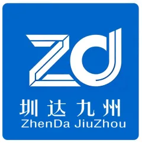
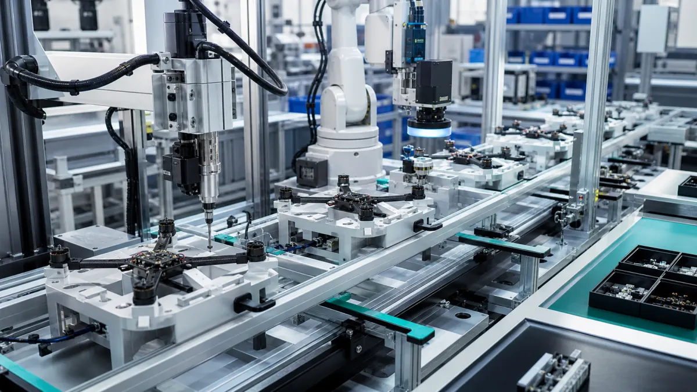
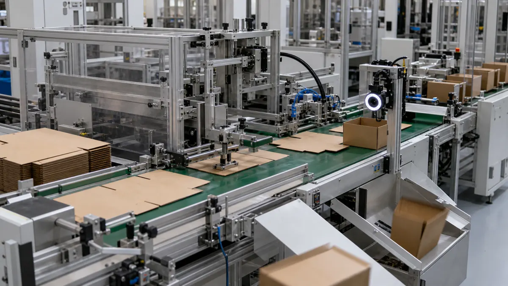
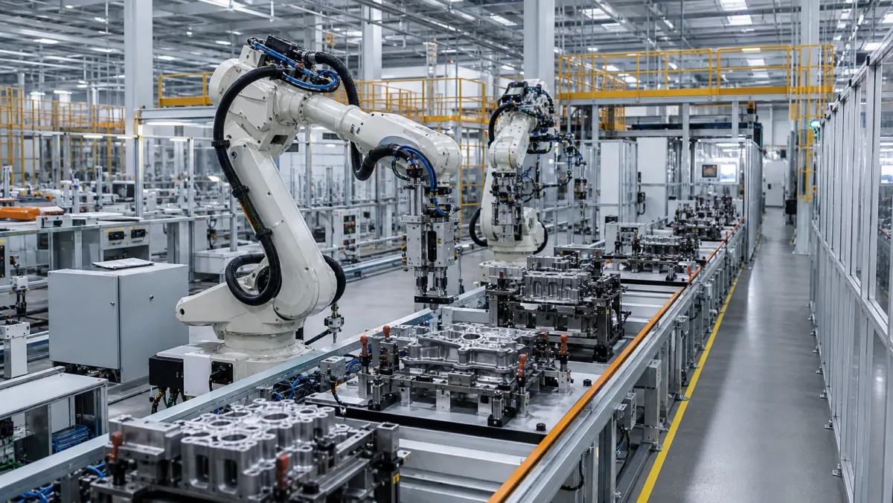
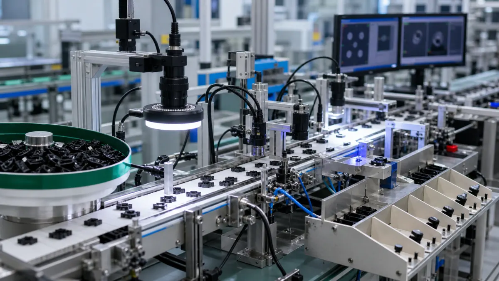
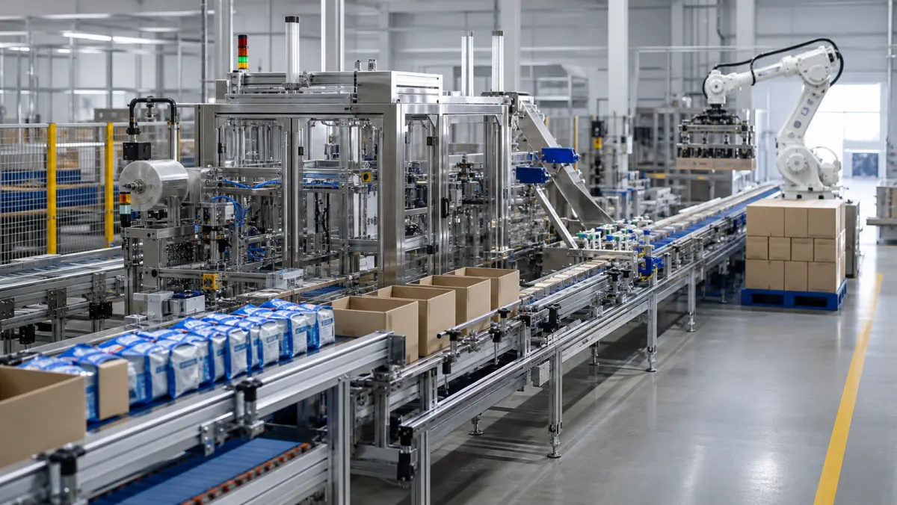

整线自动化方案
从上料、加工、检测到下料，完成自动化产线布局、系统集成与整装交付。

圳达九州 ZhenDa JiuZhou 电话咨询 13312927009
公司聚焦汽车/锂电、3C 消费电子、半导体、包装、教育高职院校等行业，提供非标自动化生产线、非标单机设备、工装夹治具、软件相关人才驻场设计等服务。
团队覆盖需求诊断、方案设计、加工制造、装配调试、售后维保与驻厂运维，帮助客户提升生产效率、降低人工成本、保障产线稳定运行。
从上料、加工、检测到下料，完成自动化产线布局、系统集成与整装交付。
围绕客户工艺痛点开发专用设备、工装夹治具、视觉检测与运动控制模块。
提供机械工程师、PLC 工程师、上位机工程师等自动化相关人才驻场设计服务。
支持远程调试、工程师上门维修、重点客户驻厂运维与备件快速发运。
来料检验、工序巡检、整机出厂全功能模拟检测，减少交付现场反复调试。

通过远程诊断快速定位软件、参数及操作问题。
针对复杂硬件或现场问题，安排工程师到场检修。
为核心客户提供长期驻厂服务，保障产线稳定运行。
常备核心部件，缩短设备停机等待时间。

整线改造、过程管控、稳定交付，提升效率并降低停机风险。

工业视觉检测、C# 上位机中控、PLC 联动，实现无人化闭环。

开箱、装填、封箱、贴标、码垛集成，兼容多种包装形式。
Contact